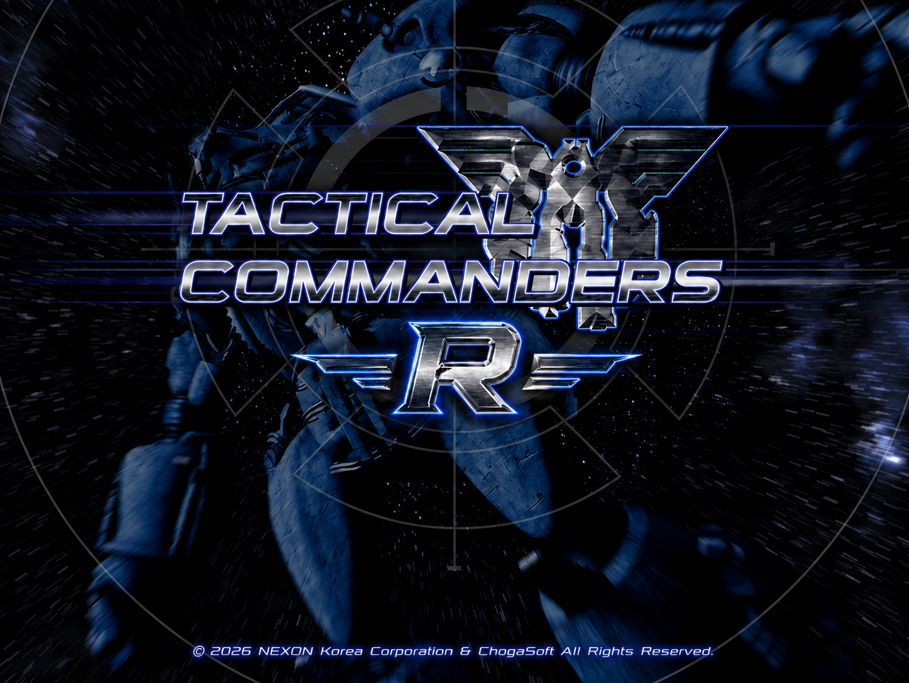

첫번째 개발자 노트
첫 번째 개발자 노트는 가볍게 시작해 보려 합니다.
먼저, 여기까지 찾아와 주신 모든 분들께 진심으로 감사드립니다.
드디어 다시 한글판 택티컬 커맨더스를 정식으로 선보일 수 있는 기회를 얻게 되어 기쁘면서도, 한편으로는 큰 책임감과 부담도 느끼고 있습니다.
저희는 아직 많은 부분에서 부족한 2인 팀이지만, 할 수 있는 범위 안에서 최대한 좋은 결과물을 만들어 보려 합니다.
여러분께서 궁금해하실 게임 관련 내용을 모두 바로 공개하고 싶은 마음은 크지만, 개발 및 작업 진행 상황에 맞춰 순차적으로 공개해야 하는 점 양해 부탁드립니다.
아카이브 사이트 역시 현재 몇 가지 추가로 준비 중인 내용이 있으며, 조만간 작업을 마치는 대로 업데이트할 예정입니다.
그리고 이전 기사에서 공개된 택티컬 커맨더스 리마스터 이미지는 저희 내부 개발 이미지입니다.
다행히 많은 분들께서 좋게 봐주신 덕분에 여러 기사 메인에 사용되어 기쁘기도 하고, 동시에 더 잘 만들어야겠다는 부담도 느끼고 있습니다.
오늘은 우선 메인 스플래시 이미지를 공개하려 합니다.

앞으로도 작업이 완료되는 대로 새로운 게임 정보와 개발 소식을 순차적으로 공유드리겠습니다.
많은 관심과 응원 부탁드립니다.
감사합니다.